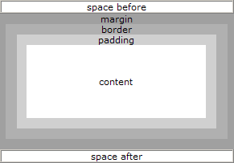

XSL-FO Blocks (块）
XSL-FO 的输出位于块区域中。
XSL-FO 页面、流以及块
内容“块”会“流”入“页面”中，然后输出到媒介。
XSL-FO 输出通常被嵌套在 <fo:block> 元素中，<fo:block> 嵌套于 <fo:flow> 元素中，<fo:flow> 嵌套于 <fo:page-sequence> 元素中：
<fo:page-sequence>
<fo:flow flow-name="xsl-region-body">
<fo:block>
<!-- Output goes here -->
</fo:block>
</fo:flow>
</fo:page-sequence>
块区域的属性
块是位于矩形框中的输出序列：
<fo:block border-width="1mm"> 这个输出块周围有一条一毫米的边框。 </fo:block>
由于块区域是矩形框，所以可共享许多公共的区域属性：
- space before 和 space after
- margin
- border
- padding
- space before
图示：
space before 和 space after 是块与块之间起分割作用的空白。
margin 是块外侧的空白区域。
border 的区域外部边缘的矩形。其四个边均可有不同的宽度。它也可被填充为不同的颜色和背景图像。
padding 是位于内容区域与边框之间的区域。
内容区域可包含实际的内容，比如文本、图片、图形等等。
块边距
- margin
- margin-top
- margin-bottom
- margin-left
- margin-right
块边框
边框样式属性:
- border-style
- border-before-style
- border-after-style
- border-start-style
- border-end-style
- border-top-style ((等同于 border-before)
- border-bottom-style (等同于 border-after)
- border-left-style (等同于 border-start)
- border-right-style (等同于 border-end)
边框颜色属性:
- border-color
- border-before-color
- border-after-color
- border-start-color
- border-end-color
- border-top-color (等同于 border-before)
- border-bottom-color (等同于 border-after)
- border-left-color (等同于 border-start)
- border-right-color (等同于 border-end)
边框宽度属性:
- border-width
- border-before-width
- border-after-width
- border-start-width
- border-end-width
- border-top-width (等同于 border-before)
- border-bottom-width (等同于 border-after)
- border-left-width (等同于 border-start)
- border-right-width (等同于 border-end)
块填充
- padding
- padding-before
- padding-after
- padding-start
- padding-end
- padding-top (等同于 padding-before)
- padding-bottom (等同于 padding-after)
- padding-left (等同于 padding-start)
- padding-right (等同于 padding-end)
块背景
- background-color
- background-image
- background-repeat
- background-attachment (scroll 或者 fixed)
块样式属性：
块是可被单独样式化的输出序列：
<fo:block font-size="12pt" font-family="sans-serif"> This block of output will be written in a 12pt sans-serif font. </fo:block>
字体属性:
- font-family
- font-weight
- font-style
- font-size
- font-variant
文本属性:
- text-align
- text-align-last
- text-indent
- start-indent
- end-indent
- wrap-option (定义自动换行，word wrap)
- break-before (定义分页符，page breaks)
- break-after (定义分页符，page breaks)
- reference-orientation (定义 90" 内的文字旋转)
实例
<fo:block
font-size="14pt" font-family="verdana" color="red"
space-before="5mm" space-after="5mm">
W3CSchool
</fo:block>
<fo:block
text-indent="5mm"
font-family="verdana" font-size="12pt"
space-before="5mm" space-after="5mm">
At W3CSchool you will find all the Web-building tutorials you
need, from basic HTML and XHTML to advanced XML, XSL, Multimedia
and WAP.
</fo:block>
结果：

请看上面的例子，如果要生成一个拥有许多标题和段落的文档，那么将会需要非常多的代码。
通常，XSL-FO 文档不会像我们刚才所做的那样对格式化信息和内容进行组合。
通过 XSLT 的些许帮助，我们就可以把格式化信息置入模板，然后编写出更纯净的内容。
您会在本教程后面的章节学习到如何使用 XSLT 模板来组合 XSL-FO。